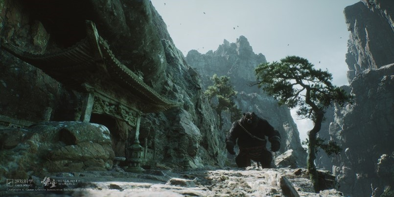

Black Wind Mountain
With the help of the Earth God, the Heaven's Mandate arrives at Guanyin Zen Temple and defeats the Black Wind Great King, obtaining the first Root of Sun Wukong, "Joy Through Sight."
With the help of the Earth God, the Heaven's Mandate arrives at Guanyin Zen Temple and defeats the Black Wind Great King, obtaining the first Root of Sun Wukong, "Joy Through Sight."
Heaven's Mandate defeats the Yellow Wind Great Saint in Yellow Wind Ridge and receives the second Root, "Anger Through Hearing," from Lingji Bodhisattva.
Alongside Zhu Bajie, Heaven's Mandate defeats the Yellow Eyebrow Demon King and acquires the third Root, "Love Through Smell," from Maitreya Bodhisattva.
Allied with spider demons, Heaven's Mandate defeats the Hundred Eyes Demon Lord, gaining the fourth Root, "Thought Through Taste."
After confronting Red Boy, Heaven's Mandate acquires the fifth Root, "Sorrow Through the Body," and uncovers a conspiracy involving the Heavenly Court and Demon Kings.

In a final battle with Erlang Shen, Heaven's Mandate obtains the sixth Root, "Desire Through Opinion," and learns of Sun Wukong's self-liberation through his death.